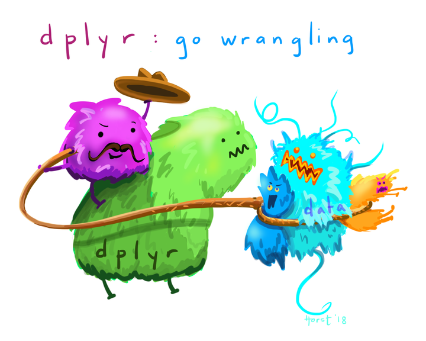

Wrangling your data ü§†, the basics
Week 4
Wrangling
Introduction
This is a new lecture from the previous delivery of this course. In the last offering, I found that the process of wrangling data was by far the thing that people had the most trouble with. In recitations, and for module assignments, I would provide data in a way that would need some adjustment before visualization can be made - and if I’m being honest, I heard a lot of rumblings about this.
Still, I am going to leave in the course activities that required data to the wrangled before visualization. I am doing this because real data is mostly not structured precisely how it needs to be to make the visualizations you want. I want to provide you all some practice to get comfortable with using your data lassos. This is something you need to get comfortable with on your coding journey.
But, I have added in this extra lecture to explicitly go over what I think are the most useful wrangling functions and tools you can use in R. I hope this introduces you to some of what is possible with R, so it will trigger your memory later when you need to use it. You can also always come back to this page during the course.
What is the tidyverse?
“The tidyverse” is a collection of packages called that are designed for data science. You can certainly use R without using the tidyverse, but it has many packages that I think will make your life a lot easier. We will be using mostly tidyverse functions in this class, with some base R syntax scattered throughout.
The “core tidyverse” contains the 8 packages below:
dplyr: for data manipulationggplot2: a “grammar of graphics” for creating beautiful plotsreadr: for reading in rectangular data (i.e., Excel-style formatting)tibble: using tibbles as modern/better dataframesstringr: handling strings (i.e., text or stuff in quotes)forcats: for handling categorical variables (i.e., factors) (meow!)tidyr: to make “tidy data”purrr: for enhancing functional programming (also meow!)
We will be using many of these other packages in this course, but will talk about them as we go. There are more tidyverse packages outside of these core eight, and we will talk about some of them another time.
tl;dr Tidyverse has a lot of packages that make data analysis easier. None of them are required, but I think you’ll find many tidyverse approaches easier and more intuitive than using base R.
You can find here some examples of comparing tidyverse and base R syntax.
Today we will be mostly talking through functions that live within the dplyr package.
Installing ggplot & tidyverse
To install packages in R that are on the Comprehensive R Archive Network (CRAN), you can use the function install.packages().
install.packages("tidyverse")
install.packages("ggplot2")We only need to install packages once. But, every time we want to use them, we need to “load” them, and can do this using the function library().
library(tidyverse)── Attaching core tidyverse packages ──────────────────────── tidyverse 2.0.0 ──
✔ dplyr 1.1.2 ✔ readr 2.1.4
✔ forcats 1.0.0 ✔ stringr 1.5.0
✔ ggplot2 3.4.2 ✔ tibble 3.2.1
✔ lubridate 1.9.2 ✔ tidyr 1.3.0
✔ purrr 1.0.1
── Conflicts ────────────────────────────────────────── tidyverse_conflicts() ──
✖ dplyr::filter() masks stats::filter()
✖ dplyr::lag() masks stats::lag()
ℹ Use the conflicted package (<http://conflicted.r-lib.org/>) to force all conflicts to become errorsIt’s a good habit to not ignore warnings/messages that R gives you.
tl:dr
install.packages()once,library()every time.
Loading data
In class, we will use a combination of data embedded within R (or packages in R), from the internet, or data you import yourself. I am going to quickly go over ways to import common data types.
.csv
Files saved as comma separated values are the most common data type I tend to import. The function read_csv() which is a part of the tidyverse package readr allows you to do this easily as it has a special function for this file type, as it is so common.
Make sure that your file is within your working directory (or you have its relative or complete path), and you can install it (and save it) like this:
sample_csv_data <- read_csv(file = "my-file-name.csv").xlsx
The second most common file type I import are those made in Excel. These files can either be converted to a .csv and then read in like we just went over, or you can load the package readxl and read files in directly. If you don’t already have readxl you can download it using install.packages().
library(readxl)
sample_excel_data <- read_excel(file = "my-file-name.xlsx",
sheet = "Sheet1")Here you can find the readr cheatsheet.
The pipe |>
The pipe |> (which used to be written %>%, and you will see this widely when googling/troubleshooting and sometimes see me default to this older syntax) is a tool that allows you to take the output of one function, and send it to the next function.
You can read the pipe as “and then” - here is a theoretical example.
take_this_data |>
then_this_function() |>
then_another_function() |>
finally_a_last_function()The easiest way to see how the pipe works is with an example. We are going to use the dataset diamonds which comes pre-loaded when you load the tidyverse.
What is in the dataset diamonds? We can get a “glimpse” of it with the function glimpse, which is sort of like the tidyverse version of str().
glimpse(diamonds)Rows: 53,940
Columns: 10
$ carat <dbl> 0.23, 0.21, 0.23, 0.29, 0.31, 0.24, 0.24, 0.26, 0.22, 0.23, 0.…
$ cut <ord> Ideal, Premium, Good, Premium, Good, Very Good, Very Good, Ver…
$ color <ord> E, E, E, I, J, J, I, H, E, H, J, J, F, J, E, E, I, J, J, J, I,…
$ clarity <ord> SI2, SI1, VS1, VS2, SI2, VVS2, VVS1, SI1, VS2, VS1, SI1, VS1, …
$ depth <dbl> 61.5, 59.8, 56.9, 62.4, 63.3, 62.8, 62.3, 61.9, 65.1, 59.4, 64…
$ table <dbl> 55, 61, 65, 58, 58, 57, 57, 55, 61, 61, 55, 56, 61, 54, 62, 58…
$ price <int> 326, 326, 327, 334, 335, 336, 336, 337, 337, 338, 339, 340, 34…
$ x <dbl> 3.95, 3.89, 4.05, 4.20, 4.34, 3.94, 3.95, 4.07, 3.87, 4.00, 4.…
$ y <dbl> 3.98, 3.84, 4.07, 4.23, 4.35, 3.96, 3.98, 4.11, 3.78, 4.05, 4.…
$ z <dbl> 2.43, 2.31, 2.31, 2.63, 2.75, 2.48, 2.47, 2.53, 2.49, 2.39, 2.…What if we want to see what is the average price of a diamond where cut = "Premium". There are a few ways we can do this.
# one way
# filter for only the premium diamonds
diamonds_premium <- filter(diamonds, cut == "Premium")
# calculate the mean using summarize
summarize(diamonds_premium, mean_price = mean(price))# A tibble: 1 × 1
mean_price
<dbl>
1 4584.# or calculate mean using mean
# the function mean() requires a vector
mean(diamonds_premium$price)[1] 4584.258Or, we can use the pipe |>. We are going to talk about summarize() in a minute.
diamonds |>
filter(cut == "Premium") |>
summarize(mean_price = mean(price))# A tibble: 1 × 1
mean_price
<dbl>
1 4584.# if we want to use the function mean() we need to supply a vector
diamonds |>
filter(cut == "Premium") |>
pull(price) |> # pulls out price as a vector
mean()[1] 4584.258Some reasons I like the pipe:
- its easier to read (and doesn’t have a lot of nested parentheses)
- it doesn’t require you to create lots of interim objects which you won’t use again
- its easy to troubleshoot
The keyboard shortcut for
|>isCtrl/Cmd+Shift+M
Of course you can assign the output of a pipe to something using the assignment operator <- and then use it for other things.
Ssome functions are not “pipe friendly” meaning they will not work using pipes. This is often because the data is not the first argument passed to the function. All tidyverse functions work with piping.
Selecting columns with select()
Often you will want to pick only certain columns in your dataframe, and you can do this with the function select(). You can pick columns by:
- their names
- their position (i.e., index)
- characteristics of that column
Let’s select first by name.
diamonds |>
select(carat, cut, price)# A tibble: 53,940 × 3
carat cut price
<dbl> <ord> <int>
1 0.23 Ideal 326
2 0.21 Premium 326
3 0.23 Good 327
4 0.29 Premium 334
5 0.31 Good 335
6 0.24 Very Good 336
7 0.24 Very Good 336
8 0.26 Very Good 337
9 0.22 Fair 337
10 0.23 Very Good 338
# ℹ 53,930 more rowsNote that when you use the pipe, the potential column names will autofill for you after you type 3 letters. You can also hit tab to scroll through all the potential objects to select.
We can also select by index. In general I would recommend against this because its really hard to remember which column indices are which variables today, nevermind returning back to old code 1 year from now.
diamonds |>
select(c(1, 2, 7)) # you could also use the colon syntax if your columns are sequential# A tibble: 53,940 × 3
carat cut price
<dbl> <ord> <int>
1 0.23 Ideal 326
2 0.21 Premium 326
3 0.23 Good 327
4 0.29 Premium 334
5 0.31 Good 335
6 0.24 Very Good 336
7 0.24 Very Good 336
8 0.26 Very Good 337
9 0.22 Fair 337
10 0.23 Very Good 338
# ℹ 53,930 more rowsYou can also select using selection helpers like:
everything(): picks all variablesstarts_with(): starts with some prefixcontains(): contains a specific stringwhere(): selects columns where the statement given in the argument is TRUE
Here is an example of using where() to select only the columns that are numeric.
diamonds |>
select(where(is.numeric))# A tibble: 53,940 × 7
carat depth table price x y z
<dbl> <dbl> <dbl> <int> <dbl> <dbl> <dbl>
1 0.23 61.5 55 326 3.95 3.98 2.43
2 0.21 59.8 61 326 3.89 3.84 2.31
3 0.23 56.9 65 327 4.05 4.07 2.31
4 0.29 62.4 58 334 4.2 4.23 2.63
5 0.31 63.3 58 335 4.34 4.35 2.75
6 0.24 62.8 57 336 3.94 3.96 2.48
7 0.24 62.3 57 336 3.95 3.98 2.47
8 0.26 61.9 55 337 4.07 4.11 2.53
9 0.22 65.1 61 337 3.87 3.78 2.49
10 0.23 59.4 61 338 4 4.05 2.39
# ℹ 53,930 more rowsYou can find more helpers here.
Using select() will also set the order of your columns. More about this later.
Choosing observations with filter()

Sometimes you want to select observations (rows) based on values. To do this you use filter(). Try not to confuse this with select().
select()picks columns, whilefilter()picks rows.
The function filter() will keep only observations that meet your filtering criteria.
Let’s say we want to only keep the diamonds that are bigger than 3 carats.
diamonds |>
filter(carat > 3)# A tibble: 32 × 10
carat cut color clarity depth table price x y z
<dbl> <ord> <ord> <ord> <dbl> <dbl> <int> <dbl> <dbl> <dbl>
1 3.01 Premium I I1 62.7 58 8040 9.1 8.97 5.67
2 3.11 Fair J I1 65.9 57 9823 9.15 9.02 5.98
3 3.01 Premium F I1 62.2 56 9925 9.24 9.13 5.73
4 3.05 Premium E I1 60.9 58 10453 9.26 9.25 5.66
5 3.02 Fair I I1 65.2 56 10577 9.11 9.02 5.91
6 3.01 Fair H I1 56.1 62 10761 9.54 9.38 5.31
7 3.65 Fair H I1 67.1 53 11668 9.53 9.48 6.38
8 3.24 Premium H I1 62.1 58 12300 9.44 9.4 5.85
9 3.22 Ideal I I1 62.6 55 12545 9.49 9.42 5.92
10 3.5 Ideal H I1 62.8 57 12587 9.65 9.59 6.03
# ℹ 22 more rowsHere I made use of the greater than > sign, and there are other operators you could also use to help you filter.
==: equal to (I usually read this as exactly equal to, and is different than using an equal sign in an equation)<,>: less than or greater than<=,>=: less than or equal to, great than or equal to&: and|: or!: not equalis.na: is NA
You can also layer your filtering.
diamonds |>
filter(carat > 3 & cut == "Premium")# A tibble: 13 × 10
carat cut color clarity depth table price x y z
<dbl> <ord> <ord> <ord> <dbl> <dbl> <int> <dbl> <dbl> <dbl>
1 3.01 Premium I I1 62.7 58 8040 9.1 8.97 5.67
2 3.01 Premium F I1 62.2 56 9925 9.24 9.13 5.73
3 3.05 Premium E I1 60.9 58 10453 9.26 9.25 5.66
4 3.24 Premium H I1 62.1 58 12300 9.44 9.4 5.85
5 3.01 Premium G SI2 59.8 58 14220 9.44 9.37 5.62
6 4.01 Premium I I1 61 61 15223 10.1 10.1 6.17
7 4.01 Premium J I1 62.5 62 15223 10.0 9.94 6.24
8 3.67 Premium I I1 62.4 56 16193 9.86 9.81 6.13
9 3.01 Premium I SI2 60.2 59 18242 9.36 9.31 5.62
10 3.04 Premium I SI2 59.3 60 18559 9.51 9.46 5.62
11 3.51 Premium J VS2 62.5 59 18701 9.66 9.63 6.03
12 3.01 Premium J SI2 60.7 59 18710 9.35 9.22 5.64
13 3.01 Premium J SI2 59.7 58 18710 9.41 9.32 5.59Make new columns with mutate()

Sometimes you want to make new columns based on existing variables and you can do this with mutate().
For example, we might want to create a new column called “price_per_carat” which we calculate by taking price and divide it by carat. Keep in mind this would be an easy way to log transform data.
diamonds |>
mutate(price_per_carat = price/carat)# A tibble: 53,940 × 11
carat cut color clarity depth table price x y z price_per_carat
<dbl> <ord> <ord> <ord> <dbl> <dbl> <int> <dbl> <dbl> <dbl> <dbl>
1 0.23 Ideal E SI2 61.5 55 326 3.95 3.98 2.43 1417.
2 0.21 Prem… E SI1 59.8 61 326 3.89 3.84 2.31 1552.
3 0.23 Good E VS1 56.9 65 327 4.05 4.07 2.31 1422.
4 0.29 Prem… I VS2 62.4 58 334 4.2 4.23 2.63 1152.
5 0.31 Good J SI2 63.3 58 335 4.34 4.35 2.75 1081.
6 0.24 Very… J VVS2 62.8 57 336 3.94 3.96 2.48 1400
7 0.24 Very… I VVS1 62.3 57 336 3.95 3.98 2.47 1400
8 0.26 Very… H SI1 61.9 55 337 4.07 4.11 2.53 1296.
9 0.22 Fair E VS2 65.1 61 337 3.87 3.78 2.49 1532.
10 0.23 Very… H VS1 59.4 61 338 4 4.05 2.39 1470.
# ℹ 53,930 more rowsMutated columns are by default put at the end of the dataframe. We can reorder simply using select().
diamonds |>
mutate(price_per_carat = price/carat) |>
select(price_per_carat, everything()) # put new column first, then everything# A tibble: 53,940 × 11
price_per_carat carat cut color clarity depth table price x y z
<dbl> <dbl> <ord> <ord> <ord> <dbl> <dbl> <int> <dbl> <dbl> <dbl>
1 1417. 0.23 Ideal E SI2 61.5 55 326 3.95 3.98 2.43
2 1552. 0.21 Prem… E SI1 59.8 61 326 3.89 3.84 2.31
3 1422. 0.23 Good E VS1 56.9 65 327 4.05 4.07 2.31
4 1152. 0.29 Prem… I VS2 62.4 58 334 4.2 4.23 2.63
5 1081. 0.31 Good J SI2 63.3 58 335 4.34 4.35 2.75
6 1400 0.24 Very… J VVS2 62.8 57 336 3.94 3.96 2.48
7 1400 0.24 Very… I VVS1 62.3 57 336 3.95 3.98 2.47
8 1296. 0.26 Very… H SI1 61.9 55 337 4.07 4.11 2.53
9 1532. 0.22 Fair E VS2 65.1 61 337 3.87 3.78 2.49
10 1470. 0.23 Very… H VS1 59.4 61 338 4 4.05 2.39
# ℹ 53,930 more rowsYou can also make new columns using conditional statements. For example, what if we want to create a new column that tells us if a diamond is more than $1000 called “at_least_1000”. We will do this using if_else().
diamonds |>
mutate(at_least_1000 = if_else(condition = price >= 1000,
true = "$1000 or more",
false = "less than $1000")) |>
select(at_least_1000, everything()) # move to front so we can see it# A tibble: 53,940 × 11
at_least_1000 carat cut color clarity depth table price x y z
<chr> <dbl> <ord> <ord> <ord> <dbl> <dbl> <int> <dbl> <dbl> <dbl>
1 less than $1000 0.23 Ideal E SI2 61.5 55 326 3.95 3.98 2.43
2 less than $1000 0.21 Prem… E SI1 59.8 61 326 3.89 3.84 2.31
3 less than $1000 0.23 Good E VS1 56.9 65 327 4.05 4.07 2.31
4 less than $1000 0.29 Prem… I VS2 62.4 58 334 4.2 4.23 2.63
5 less than $1000 0.31 Good J SI2 63.3 58 335 4.34 4.35 2.75
6 less than $1000 0.24 Very… J VVS2 62.8 57 336 3.94 3.96 2.48
7 less than $1000 0.24 Very… I VVS1 62.3 57 336 3.95 3.98 2.47
8 less than $1000 0.26 Very… H SI1 61.9 55 337 4.07 4.11 2.53
9 less than $1000 0.22 Fair E VS2 65.1 61 337 3.87 3.78 2.49
10 less than $1000 0.23 Very… H VS1 59.4 61 338 4 4.05 2.39
# ℹ 53,930 more rowsIf you have more than two conditions, you can use case_when().
If you use mutate() to create a new column that has the same name as an existing column, it will override that current column.
You can find other mutate() helpers here.
Sorting with arrange()
Sometimes you just want to see a dataframe ordered by a particular column. We can do that easily with arrange().
diamonds |>
arrange(price)# A tibble: 53,940 × 10
carat cut color clarity depth table price x y z
<dbl> <ord> <ord> <ord> <dbl> <dbl> <int> <dbl> <dbl> <dbl>
1 0.23 Ideal E SI2 61.5 55 326 3.95 3.98 2.43
2 0.21 Premium E SI1 59.8 61 326 3.89 3.84 2.31
3 0.23 Good E VS1 56.9 65 327 4.05 4.07 2.31
4 0.29 Premium I VS2 62.4 58 334 4.2 4.23 2.63
5 0.31 Good J SI2 63.3 58 335 4.34 4.35 2.75
6 0.24 Very Good J VVS2 62.8 57 336 3.94 3.96 2.48
7 0.24 Very Good I VVS1 62.3 57 336 3.95 3.98 2.47
8 0.26 Very Good H SI1 61.9 55 337 4.07 4.11 2.53
9 0.22 Fair E VS2 65.1 61 337 3.87 3.78 2.49
10 0.23 Very Good H VS1 59.4 61 338 4 4.05 2.39
# ℹ 53,930 more rowsBy default, arrange() sorts from smallest to largest. We can change that if that’s what we want.
# these are the same
diamonds |>
arrange(-price)# A tibble: 53,940 × 10
carat cut color clarity depth table price x y z
<dbl> <ord> <ord> <ord> <dbl> <dbl> <int> <dbl> <dbl> <dbl>
1 2.29 Premium I VS2 60.8 60 18823 8.5 8.47 5.16
2 2 Very Good G SI1 63.5 56 18818 7.9 7.97 5.04
3 1.51 Ideal G IF 61.7 55 18806 7.37 7.41 4.56
4 2.07 Ideal G SI2 62.5 55 18804 8.2 8.13 5.11
5 2 Very Good H SI1 62.8 57 18803 7.95 8 5.01
6 2.29 Premium I SI1 61.8 59 18797 8.52 8.45 5.24
7 2.04 Premium H SI1 58.1 60 18795 8.37 8.28 4.84
8 2 Premium I VS1 60.8 59 18795 8.13 8.02 4.91
9 1.71 Premium F VS2 62.3 59 18791 7.57 7.53 4.7
10 2.15 Ideal G SI2 62.6 54 18791 8.29 8.35 5.21
# ℹ 53,930 more rowsdiamonds |>
arrange(desc(price))# A tibble: 53,940 × 10
carat cut color clarity depth table price x y z
<dbl> <ord> <ord> <ord> <dbl> <dbl> <int> <dbl> <dbl> <dbl>
1 2.29 Premium I VS2 60.8 60 18823 8.5 8.47 5.16
2 2 Very Good G SI1 63.5 56 18818 7.9 7.97 5.04
3 1.51 Ideal G IF 61.7 55 18806 7.37 7.41 4.56
4 2.07 Ideal G SI2 62.5 55 18804 8.2 8.13 5.11
5 2 Very Good H SI1 62.8 57 18803 7.95 8 5.01
6 2.29 Premium I SI1 61.8 59 18797 8.52 8.45 5.24
7 2.04 Premium H SI1 58.1 60 18795 8.37 8.28 4.84
8 2 Premium I VS1 60.8 59 18795 8.13 8.02 4.91
9 1.71 Premium F VS2 62.3 59 18791 7.57 7.53 4.7
10 2.15 Ideal G SI2 62.6 54 18791 8.29 8.35 5.21
# ℹ 53,930 more rowsComputing summaries with summarize()
The function summarize() calculates summary information based on the functions you provide as arguments. This function creates a wholly new dataframe, providing one row for each grouping variable. If there is no grouping, the resulting dataframe will have one row.
Let’s look at an example. We can use summarize() The syntax is new_column_name = function().
diamonds |>
summarize(mean_price = mean(price))# A tibble: 1 × 1
mean_price
<dbl>
1 3933.We can also provide multiple items for summary.
diamonds |>
summarize(mean_price = mean(price),
sd_price = sd(price),
count = n())# A tibble: 1 × 3
mean_price sd_price count
<dbl> <dbl> <int>
1 3933. 3989. 53940Here are some examples of functions you can use within summarize():
mean()andmedian(): calculate mean and mediansd()andIQR(): calculate standard deviation and interquartile rangemin()andmax(): calculate min and maxn()andn_distinct(): calculate how many observations there are, and how many distinct observations there are
You can also use the function across() combined with where() to calculate summary data “across” different columns.

For example, like we see in the illustration above, we might want to calculate the mean “across” all columns “where” if we asked if that column contains numeric data, we would get TRUE.
diamonds |>
summarize(across(where(is.numeric), mean))# A tibble: 1 × 7
carat depth table price x y z
<dbl> <dbl> <dbl> <dbl> <dbl> <dbl> <dbl>
1 0.798 61.7 57.5 3933. 5.73 5.73 3.54I hope you can start to see now how combining lots of these different functions together will help you achieve what you want with your coding.
Operations by group with group_by()
Sometimes you might want to group your data together to perform operations group-wise. You can do this with group_by(). The way to ungroup is to use ungroup().
For example, say we want to calculate the average price of a diamond for each cut type.
diamonds |>
group_by(cut) |>
summarize(mean_price = mean(price))# A tibble: 5 × 2
cut mean_price
<ord> <dbl>
1 Fair 4359.
2 Good 3929.
3 Very Good 3982.
4 Premium 4584.
5 Ideal 3458.Now instead of getting one row for the mean price, we are getting a mean price for each cut.
Note that when you use group_by(), the groupings are now embedded within your data. Let me show you what I mean.
diamonds_cut <- diamonds |>
group_by(cut)
glimpse(diamonds)Rows: 53,940
Columns: 10
$ carat <dbl> 0.23, 0.21, 0.23, 0.29, 0.31, 0.24, 0.24, 0.26, 0.22, 0.23, 0.…
$ cut <ord> Ideal, Premium, Good, Premium, Good, Very Good, Very Good, Ver…
$ color <ord> E, E, E, I, J, J, I, H, E, H, J, J, F, J, E, E, I, J, J, J, I,…
$ clarity <ord> SI2, SI1, VS1, VS2, SI2, VVS2, VVS1, SI1, VS2, VS1, SI1, VS1, …
$ depth <dbl> 61.5, 59.8, 56.9, 62.4, 63.3, 62.8, 62.3, 61.9, 65.1, 59.4, 64…
$ table <dbl> 55, 61, 65, 58, 58, 57, 57, 55, 61, 61, 55, 56, 61, 54, 62, 58…
$ price <int> 326, 326, 327, 334, 335, 336, 336, 337, 337, 338, 339, 340, 34…
$ x <dbl> 3.95, 3.89, 4.05, 4.20, 4.34, 3.94, 3.95, 4.07, 3.87, 4.00, 4.…
$ y <dbl> 3.98, 3.84, 4.07, 4.23, 4.35, 3.96, 3.98, 4.11, 3.78, 4.05, 4.…
$ z <dbl> 2.43, 2.31, 2.31, 2.63, 2.75, 2.48, 2.47, 2.53, 2.49, 2.39, 2.…glimpse(diamonds_cut)Rows: 53,940
Columns: 10
Groups: cut [5]
$ carat <dbl> 0.23, 0.21, 0.23, 0.29, 0.31, 0.24, 0.24, 0.26, 0.22, 0.23, 0.…
$ cut <ord> Ideal, Premium, Good, Premium, Good, Very Good, Very Good, Ver…
$ color <ord> E, E, E, I, J, J, I, H, E, H, J, J, F, J, E, E, I, J, J, J, I,…
$ clarity <ord> SI2, SI1, VS1, VS2, SI2, VVS2, VVS1, SI1, VS2, VS1, SI1, VS1, …
$ depth <dbl> 61.5, 59.8, 56.9, 62.4, 63.3, 62.8, 62.3, 61.9, 65.1, 59.4, 64…
$ table <dbl> 55, 61, 65, 58, 58, 57, 57, 55, 61, 61, 55, 56, 61, 54, 62, 58…
$ price <int> 326, 326, 327, 334, 335, 336, 336, 337, 337, 338, 339, 340, 34…
$ x <dbl> 3.95, 3.89, 4.05, 4.20, 4.34, 3.94, 3.95, 4.07, 3.87, 4.00, 4.…
$ y <dbl> 3.98, 3.84, 4.07, 4.23, 4.35, 3.96, 3.98, 4.11, 3.78, 4.05, 4.…
$ z <dbl> 2.43, 2.31, 2.31, 2.63, 2.75, 2.48, 2.47, 2.53, 2.49, 2.39, 2.…Again we can combine these different functions together to summarize for the mean value across all columns that are numeric, but this time grouped by cut.
diamonds |>
group_by(cut) |>
summarize(across(where(is.numeric), mean))# A tibble: 5 × 8
cut carat depth table price x y z
<ord> <dbl> <dbl> <dbl> <dbl> <dbl> <dbl> <dbl>
1 Fair 1.05 64.0 59.1 4359. 6.25 6.18 3.98
2 Good 0.849 62.4 58.7 3929. 5.84 5.85 3.64
3 Very Good 0.806 61.8 58.0 3982. 5.74 5.77 3.56
4 Premium 0.892 61.3 58.7 4584. 5.97 5.94 3.65
5 Ideal 0.703 61.7 56.0 3458. 5.51 5.52 3.40We can also use summarize() to add how many observations there are for each category.
diamonds |>
group_by(cut) |>
summarize(across(where(is.numeric), mean), n = n())# A tibble: 5 × 9
cut carat depth table price x y z n
<ord> <dbl> <dbl> <dbl> <dbl> <dbl> <dbl> <dbl> <int>
1 Fair 1.05 64.0 59.1 4359. 6.25 6.18 3.98 1610
2 Good 0.849 62.4 58.7 3929. 5.84 5.85 3.64 4906
3 Very Good 0.806 61.8 58.0 3982. 5.74 5.77 3.56 12082
4 Premium 0.892 61.3 58.7 4584. 5.97 5.94 3.65 13791
5 Ideal 0.703 61.7 56.0 3458. 5.51 5.52 3.40 21551Here is a helpful blogpost by Hadley Wickham for working across columns.
Pivoting with pivot_longer() and pivot_wider()
The function pivot_longer() will often let you make your data in “tidy” format, and pivot_wider() allow you to make it untidy (but often still useful) again. Let me explain more what I mean.

![There are two sets of anthropomorphized data tables. The top group of three tables are all rectangular and smiling, with a shared speech bubble reading “our columns are variables and our rows are observations!”. Text to the left of that group reads “The standard structure of tidy data means that “tidy datasets are all alike…” The lower group of four tables are all different shapes, look ragged and concerned, and have different speech bubbles reading (from left to right) “my column are values and my rows are variables”, “I have variables in columns AND in rows”, “I have multiple variables in a single column”, and “I don’t even KNOW what my deal is.” Next to the frazzled data tables is text “...but every messy dataset is messy in its own way. -Hadley Wickham.”](img/tidy-data2.jpeg)
This is easier to ‚Äúsee‚Äù üëÄ than to explain. Here is an example of non-tidy data, where there is data embedded in column names, and one variable (the rank of a song) is spread across many columns:
billboard# A tibble: 317 × 79
artist track date.entered wk1 wk2 wk3 wk4 wk5 wk6 wk7 wk8
<chr> <chr> <date> <dbl> <dbl> <dbl> <dbl> <dbl> <dbl> <dbl> <dbl>
1 2 Pac Baby… 2000-02-26 87 82 72 77 87 94 99 NA
2 2Ge+her The … 2000-09-02 91 87 92 NA NA NA NA NA
3 3 Doors D… Kryp… 2000-04-08 81 70 68 67 66 57 54 53
4 3 Doors D… Loser 2000-10-21 76 76 72 69 67 65 55 59
5 504 Boyz Wobb… 2000-04-15 57 34 25 17 17 31 36 49
6 98^0 Give… 2000-08-19 51 39 34 26 26 19 2 2
7 A*Teens Danc… 2000-07-08 97 97 96 95 100 NA NA NA
8 Aaliyah I Do… 2000-01-29 84 62 51 41 38 35 35 38
9 Aaliyah Try … 2000-03-18 59 53 38 28 21 18 16 14
10 Adams, Yo… Open… 2000-08-26 76 76 74 69 68 67 61 58
# ℹ 307 more rows
# ℹ 68 more variables: wk9 <dbl>, wk10 <dbl>, wk11 <dbl>, wk12 <dbl>,
# wk13 <dbl>, wk14 <dbl>, wk15 <dbl>, wk16 <dbl>, wk17 <dbl>, wk18 <dbl>,
# wk19 <dbl>, wk20 <dbl>, wk21 <dbl>, wk22 <dbl>, wk23 <dbl>, wk24 <dbl>,
# wk25 <dbl>, wk26 <dbl>, wk27 <dbl>, wk28 <dbl>, wk29 <dbl>, wk30 <dbl>,
# wk31 <dbl>, wk32 <dbl>, wk33 <dbl>, wk34 <dbl>, wk35 <dbl>, wk36 <dbl>,
# wk37 <dbl>, wk38 <dbl>, wk39 <dbl>, wk40 <dbl>, wk41 <dbl>, wk42 <dbl>, …Here is an example of the same exact data, in a tidy format, where those data that used to be column names, are now values coded for a particular variable.
billboard_long <- billboard |>
pivot_longer(
cols = starts_with("wk"),
names_to = "week",
values_to = "rank"
)
billboard_long# A tibble: 24,092 × 5
artist track date.entered week rank
<chr> <chr> <date> <chr> <dbl>
1 2 Pac Baby Don't Cry (Keep... 2000-02-26 wk1 87
2 2 Pac Baby Don't Cry (Keep... 2000-02-26 wk2 82
3 2 Pac Baby Don't Cry (Keep... 2000-02-26 wk3 72
4 2 Pac Baby Don't Cry (Keep... 2000-02-26 wk4 77
5 2 Pac Baby Don't Cry (Keep... 2000-02-26 wk5 87
6 2 Pac Baby Don't Cry (Keep... 2000-02-26 wk6 94
7 2 Pac Baby Don't Cry (Keep... 2000-02-26 wk7 99
8 2 Pac Baby Don't Cry (Keep... 2000-02-26 wk8 NA
9 2 Pac Baby Don't Cry (Keep... 2000-02-26 wk9 NA
10 2 Pac Baby Don't Cry (Keep... 2000-02-26 wk10 NA
# ℹ 24,082 more rowsWe can go back from our new longer dataframe with pivot_wider().
billboard_long |>
pivot_wider(names_from = week,
values_from = rank)# A tibble: 317 × 79
artist track date.entered wk1 wk2 wk3 wk4 wk5 wk6 wk7 wk8
<chr> <chr> <date> <dbl> <dbl> <dbl> <dbl> <dbl> <dbl> <dbl> <dbl>
1 2 Pac Baby… 2000-02-26 87 82 72 77 87 94 99 NA
2 2Ge+her The … 2000-09-02 91 87 92 NA NA NA NA NA
3 3 Doors D… Kryp… 2000-04-08 81 70 68 67 66 57 54 53
4 3 Doors D… Loser 2000-10-21 76 76 72 69 67 65 55 59
5 504 Boyz Wobb… 2000-04-15 57 34 25 17 17 31 36 49
6 98^0 Give… 2000-08-19 51 39 34 26 26 19 2 2
7 A*Teens Danc… 2000-07-08 97 97 96 95 100 NA NA NA
8 Aaliyah I Do… 2000-01-29 84 62 51 41 38 35 35 38
9 Aaliyah Try … 2000-03-18 59 53 38 28 21 18 16 14
10 Adams, Yo… Open… 2000-08-26 76 76 74 69 68 67 61 58
# ℹ 307 more rows
# ℹ 68 more variables: wk9 <dbl>, wk10 <dbl>, wk11 <dbl>, wk12 <dbl>,
# wk13 <dbl>, wk14 <dbl>, wk15 <dbl>, wk16 <dbl>, wk17 <dbl>, wk18 <dbl>,
# wk19 <dbl>, wk20 <dbl>, wk21 <dbl>, wk22 <dbl>, wk23 <dbl>, wk24 <dbl>,
# wk25 <dbl>, wk26 <dbl>, wk27 <dbl>, wk28 <dbl>, wk29 <dbl>, wk30 <dbl>,
# wk31 <dbl>, wk32 <dbl>, wk33 <dbl>, wk34 <dbl>, wk35 <dbl>, wk36 <dbl>,
# wk37 <dbl>, wk38 <dbl>, wk39 <dbl>, wk40 <dbl>, wk41 <dbl>, wk42 <dbl>, …In recap:
pivot_longer() pulls data that is embedded in column names, and reshapes your dataframe such this information is now embedded within the values. Or put differently, it collects variables that are spread across multiple columns into a single column. This makes your dataframes longer, i.e., increases the number of rows. Typically, we use pivot_longer() to make an untidy dataset tidy.
pivot_wider() takes data that is embedded in the values of your dataframe, and puts this information in variable names. Or put differently, it spreads a variable across multiple columns. This makes your dataframe “wider”, i.e., increases the number of columns. Typically, pivot_wider() will make a dataset untidy. This can be useful for certain calculations, or if you want to use a for loop to do something iteratively across columns.
Joining data together
Often you will have two separate dataframes that you want to join together. You can do this in two main ways:
- by matching something between them (i.e., using
_join()) - by smushing them together in their existing order by columns
bind_cols()or rowsbind_rows().
*_join()
We can join two dataframes, let’s call them x and y, together based on a key that we provide. This is one of the first things I did using R that I felt like wow this is really a lot easier than be doing this manually.
There are four types of joins:
inner_join(): keeps observations in x that are also present in yleft_join(): keeps observations in xright_join()`: keeps observations in yfull_join(): keeps observations in both x and y
We will use the datasets band_members and band_instruments which are pre-loaded with the tidyverse to show how this works. You can also see these examples on the mutating joins documentation page.
glimpse(band_members)Rows: 3
Columns: 2
$ name <chr> "Mick", "John", "Paul"
$ band <chr> "Stones", "Beatles", "Beatles"glimpse(band_instruments)Rows: 3
Columns: 2
$ name <chr> "John", "Paul", "Keith"
$ plays <chr> "guitar", "bass", "guitar"R will make its best guess as to what you want to “join” based on, and that works a lot of the time, but I always like to be exclicit and indicate the column key for the join with by =.
An inner join: we will only get the observations that are present in both dataframes.
inner_join(band_members, band_instruments, by = "name")# A tibble: 2 × 3
name band plays
<chr> <chr> <chr>
1 John Beatles guitar
2 Paul Beatles bass An left join: we will only get the observations that are present in band_members. Note the appearance of NA for Mick.
left_join(band_members, band_instruments, by = "name")# A tibble: 3 × 3
name band plays
<chr> <chr> <chr>
1 Mick Stones <NA>
2 John Beatles guitar
3 Paul Beatles bass An right join: we will only get the observations that are present in band_instruments. Note the appearance of NA for band for Keith (Richards, who is in the Rolling Stones). You could also switch the order of the dataframes in your argument instead of using left vs right.
right_join(band_members, band_instruments, by = "name")# A tibble: 3 × 3
name band plays
<chr> <chr> <chr>
1 John Beatles guitar
2 Paul Beatles bass
3 Keith <NA> guitarAn full join: we get all observations of what is present in band_members and band_instruments.
full_join(band_members, band_instruments, by = "name")# A tibble: 4 × 3
name band plays
<chr> <chr> <chr>
1 Mick Stones <NA>
2 John Beatles guitar
3 Paul Beatles bass
4 Keith <NA> guitarThere is nuances to what happens in different joining situations, so do this cautiously and always check that it went the way you expected it to.
bind_rows() and bind_cols()
Generally it would be preferrable to use a _join() over bind_cols() or bind_rows() since in the latter, the binding happens in the order that observations appear. This might make your data not meaningful without you knowing.
Let’s get to the examples.
data1 <- tibble(x = 1:5)
data2 <- tibble(y = 6:10)
bind_cols(data1, data2)# A tibble: 5 × 2
x y
<int> <int>
1 1 6
2 2 7
3 3 8
4 4 9
5 5 10bind_rows(data1, data2)# A tibble: 10 × 2
x y
<int> <int>
1 1 NA
2 2 NA
3 3 NA
4 4 NA
5 5 NA
6 NA 6
7 NA 7
8 NA 8
9 NA 9
10 NA 10Handling strings
![stringr: work more easily with strings. Below, and illustration of a purple fuzzy monster at a desk, in a Shakespeare-style fancy collar and monacle, writing a cat walked across my on a piece of paper with a large feather pen. Next to him are a stack of books titled regex and working with strings. Below the desk are cat prints (from walking through pen ink) and a curled up black cat with one eye open. This is a nod to regex often being described as looking like a cat walked over your keyboard. Learn more about stringr.](img/stringr.png)
Handling strings (i.e., “strings” of characters) could be multiple whole lessons, so my goal is to introduce you here to how to handle them. The tidyverse package to manage strings is called stringr. Sometimes you might want to automate extraction of only part of a value present in a column to use, remove some values, or split strings apart. This is valuable especially when the way that data is coded/recorded is different than the way you want it to be when you analyze it. Instead of manually recoding in excel, you can reproducibly and tracibly recode in R. You can read about all the functions within stringr here.
You can use regular expressions within stringr functions, but I’m not going to explicitly go over that (check out these code clubs regex1, regex2 if you want to learn more).
I’m going to create some sample data to play with.
strings <- tibble(
sample = c(rep.int("Treatment_Level1", 3),
rep.int("Treatment_Level2", 3),
rep.int("Treatment_Level3", 3),
rep.int("Control_Level1", 3),
rep.int("Control_Level2", 3),
rep.int("Control_Level3", 3)))Let’s first ask how many times do we have the string “3” in our dataframe? Note that these functions accept a vector, so you need to provide data in that form. The function str_detect() gives a logical vector as the output, the same length as the vector provided, and indicates FALSE when the pattern is not met, and TRUE when it is.
str_detect(strings$sample, pattern = "3") [1] FALSE FALSE FALSE FALSE FALSE FALSE TRUE TRUE TRUE FALSE FALSE FALSE
[13] FALSE FALSE FALSE TRUE TRUE TRUE# using sum will count how many times the logical is evaluated to be TRUE
sum(str_detect(strings$sample, pattern = "3"))[1] 6You might want to re-code your data so that Level1 becomes that actual level used. Let’s say that Level1 is 100mg, Level2 is 300 mg, and Level3 is 500mg. We can do this with str_replace() to replace the first match only or str_replace_all() to replace all matches (which is what we want here).
(strings$sample <- strings |>
select(sample) |>
pull(sample) |> # make a vector so can pass to next fxn
str_replace_all(pattern = "Level1", replacement = "100mg") |>
str_replace_all(pattern = "Level2", replacement = "300mg") |>
str_replace_all(pattern = "Level3", replacement = "500mg")) [1] "Treatment_100mg" "Treatment_100mg" "Treatment_100mg" "Treatment_300mg"
[5] "Treatment_300mg" "Treatment_300mg" "Treatment_500mg" "Treatment_500mg"
[9] "Treatment_500mg" "Control_100mg" "Control_100mg" "Control_100mg"
[13] "Control_300mg" "Control_300mg" "Control_300mg" "Control_500mg"
[17] "Control_500mg" "Control_500mg" We might not want to have both Treatment/Control and Level nested in the same cell, we can split them apart using separate_*() functions. Here we are using separate_wider_delim() to seprate the column “sample” into two new columns called “treatment” and “dose.
(strings_separated <- strings |>
separate_wider_delim(cols = sample,
delim = "_", # what is the delimiter
names = c("treatment", "dose")))# A tibble: 18 × 2
treatment dose
<chr> <chr>
1 Treatment 100mg
2 Treatment 100mg
3 Treatment 100mg
4 Treatment 300mg
5 Treatment 300mg
6 Treatment 300mg
7 Treatment 500mg
8 Treatment 500mg
9 Treatment 500mg
10 Control 100mg
11 Control 100mg
12 Control 100mg
13 Control 300mg
14 Control 300mg
15 Control 300mg
16 Control 500mg
17 Control 500mg
18 Control 500mgThe opposite function for separate_() is unite().
If we wanted to extract just the number part out of “dose” we could use readr::parse_number() to do that. Note I’ve embedded parse_number() within a mutate() function to change the values in the dataset.
strings_separated |>
mutate(dose = parse_number(dose))# A tibble: 18 × 2
treatment dose
<chr> <dbl>
1 Treatment 100
2 Treatment 100
3 Treatment 100
4 Treatment 300
5 Treatment 300
6 Treatment 300
7 Treatment 500
8 Treatment 500
9 Treatment 500
10 Control 100
11 Control 100
12 Control 100
13 Control 300
14 Control 300
15 Control 300
16 Control 500
17 Control 500
18 Control 500Cleaning up column names with clean_names()

I really like the package janitor which has some nice functions for cleaning up üßπ ‚Äúmessy‚Äù data. I use clean_names() a lot which converts untidy column names into only characters (default all in lower case) and connects words or terms with underscores.
I am making up some messy names so you can see how this works.
# make messy data
messy_data <- tibble(
"Sample Name" = 1:5,
"THE NEXT VARIABLE" = 6:10,
"ThisIsChaos" = 11:15
)
# print column names
colnames(messy_data)[1] "Sample Name" "THE NEXT VARIABLE" "ThisIsChaos" # install and load janitor
# install.packages("janitor)
library(janitor)
Attaching package: 'janitor'The following objects are masked from 'package:stats':
chisq.test, fisher.test# clean up column names
clean_names(messy_data)# A tibble: 5 × 3
sample_name the_next_variable this_is_chaos
<int> <int> <int>
1 1 6 11
2 2 7 12
3 3 8 13
4 4 9 14
5 5 10 15Useful resources
- R For Data Science, Second Edition
- Data wrangling cheatsheet by Posit
- dplyr documentation page
- tidyr documentation page
Past wrangling Code Clubs: